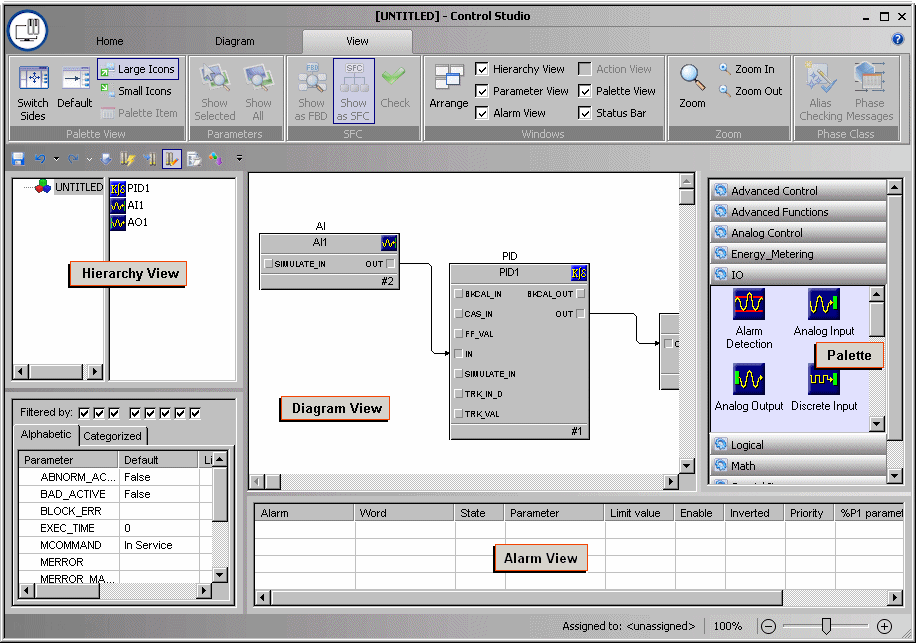

Defining the fieldbus control strategy in Control Studio
The H1 card can run a total of 96 function blocks: 32 (maximum) H1 card fieldbus blocks and 64 (maximum) DeltaV non-H1 card fieldbus blocks. The 96 function blocks can execute on either port. A maximum of 16 devices can run on a segment.
You use the DeltaV Control Studio application to create the control strategy. Remember that Control Studio has extensive online help.
Defining the control strategy consists of selecting the blocks you want to use, assigning the blocks to run in a fieldbus device or in the controller, configuring the blocks' parameters, and connecting the blocks' inputs and outputs. Then you assign the strategy to a node, save the strategy, commission the device, and download the device and strategy. You will use several Control Studio window panes to define the control strategy: the Palette, Diagram, and Parameter panes. The following image shows a basic strategy and points out the Control Studio window panes that are used to create it.

For this example, we will use a basic control strategy composed of an AI, AO, and PID block, and we will configure one parameter for an AI block. The intent of this example is to explain how to use the DeltaV Control Studio application to create a control strategy - not to show you how to create a control strategy for a particular device. Consult your device documentation for function block parameter definitions and recommended values and other configuration options for your device.